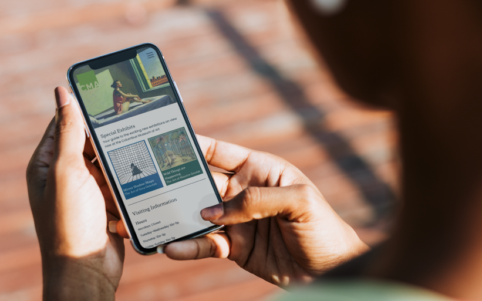
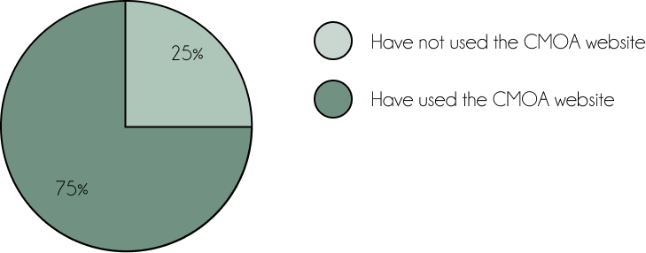
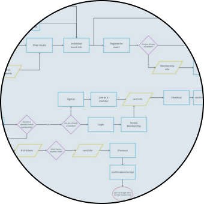
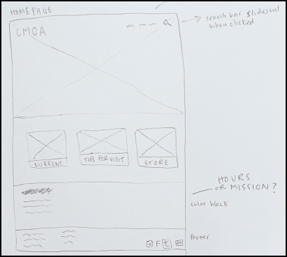
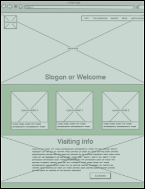

The Columbus Museum of Art
Website Redesign

hollischristine1@gmail.com
Website Redesign
The deisgn of the Columbus Museum of Art's website is ineffective at helping users engage with the arts.
A redesign focused on improved navigation and UI will better promote community engagement.
Figma, Miro, InVision, Google Forms
Dan Wazowski is a retired newspaper editor in his mid-sixties. He values time with his family, writing, and the arts. Dan feels frustrated by his technology and worries that he won’t know when his favorite exhibits are open.

Our research began with a survey asking users about their experience with the Columbus Museum of Art and it’s website. Of the people we surveyed, all of which have visited the Columbus Museum of art, 75% said they’ve used the CMOA website before, during, or after their visit to find information about the museum. We also found that most users visited the website to find out about hours of operation, ticket pricing, and current exhibits. These findings helped inform specific questions to ask in our one on one interviews.
We also conducted one on one interviews with potential users.
I conducted a competitor analysis in which I reviewed the websites of both direct and indirect competitors of the Columbus Art Museum.
We took note of strong UX and UI decisions that we would like to implement, as well as flawed designs we need to avoid. For instance, the Cleveland Museum of Art website has little to no consistency. We noticed instantly how disorienting and unpleasant the inconsistent UI was. On the other hand, our team admired the clean and consistent navigation of the 400 West website.
“The CMA website was designed to help connect the community with the arts. We have observed that the website isn't meeting this goal, which is causing visitors to miss out on their experience.”
Our story board helped us contextualize how and why our user persona would be engaging with the Columbus Museum of Art Website.
.png)
We created a user flow to help us visualize what experience we wanted to provide for users, and how users would interact with the CMOA website during that experience.
We began the prototyping phase with some wireframes to show the general vision for our homepage. We then integrated our various designs into a low fidelity prototype using Figma.
 
 1.png)